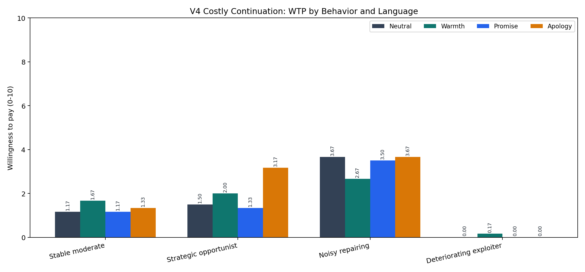
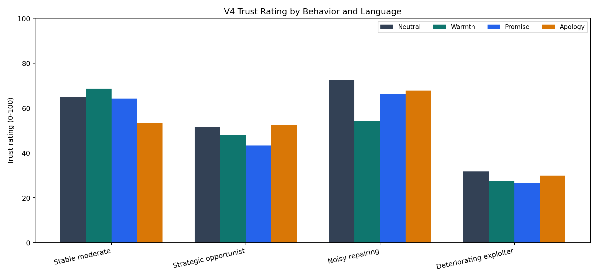
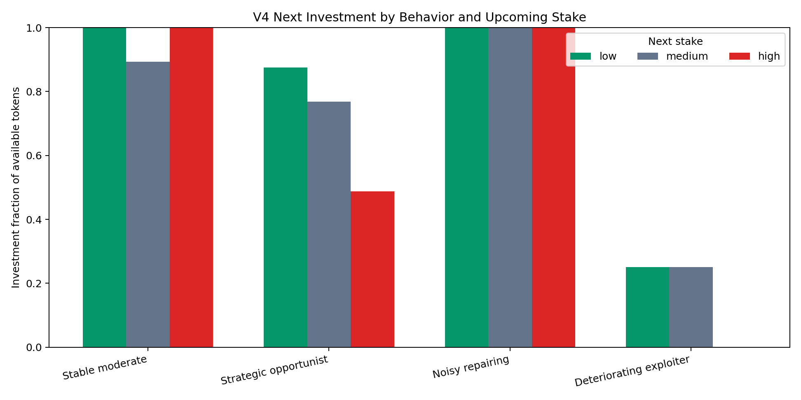
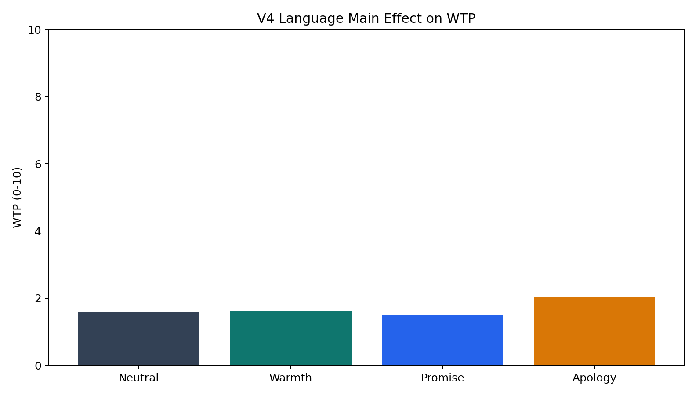

V4 fixes the main V3 confounds: numeric histories are yoked across language frames, stake order is counterbalanced, language is exogenous, and the main task asks for costly choice rather than explicit return estimates.
Each trial shows six previous rounds as trial-by-trial records. The model sees no average return, no low/high mean estimate question, and no message-vs-behavior weight probe. It receives one upcoming stake and chooses whether to continue, maximum access fee, investment, and trust rating.
In the WTP figure, zero-height bars are labeled as 0.00. For deteriorating exploiter, neutral, promise, and apology all have WTP exactly 0; warmth is visible because its mean WTP is 0.17.




| Behavior | Language | N | Observed mean | Policy next return | Continue rate | WTP | Investment fraction | Trust |
|---|---|---|---|---|---|---|---|---|
| stable_moderate | neutral_filler | 6/6 | 0.4 | 0.4 | 1 | 1.167 | 1 | 65 |
| stable_moderate | warmth | 6/6 | 0.4 | 0.4 | 1 | 1.667 | 1 | 68.667 |
| stable_moderate | promise | 6/6 | 0.4 | 0.4 | 1 | 1.167 | 1 | 64.167 |
| stable_moderate | apology | 6/6 | 0.4 | 0.4 | 1 | 1.333 | 0.857 | 53.333 |
| strategic_opportunist | neutral_filler | 6/6 | 0.4 | 0.4 | 0.833 | 1.5 | 0.733 | 51.667 |
| strategic_opportunist | warmth | 6/6 | 0.4 | 0.4 | 0.833 | 2 | 0.59 | 48 |
| strategic_opportunist | promise | 6/6 | 0.4 | 0.4 | 0.833 | 1.333 | 0.733 | 43.333 |
| strategic_opportunist | apology | 6/6 | 0.4 | 0.4 | 1 | 3.167 | 0.783 | 52.5 |
| noisy_repairing | neutral_filler | 6/6 | 0.4 | 0.55 | 1 | 3.667 | 1 | 72.5 |
| noisy_repairing | warmth | 6/6 | 0.4 | 0.55 | 1 | 2.667 | 1 | 54.167 |
| noisy_repairing | promise | 6/6 | 0.4 | 0.55 | 1 | 3.5 | 1 | 66.333 |
| noisy_repairing | apology | 6/6 | 0.4 | 0.55 | 1 | 3.667 | 1 | 67.833 |
| deteriorating_exploiter | neutral_filler | 6/6 | 0.4 | 0.25 | 0.333 | 0 | 0.167 | 31.667 |
| deteriorating_exploiter | warmth | 6/6 | 0.4 | 0.25 | 0.167 | 0.167 | 0.167 | 27.5 |
| deteriorating_exploiter | promise | 6/6 | 0.4 | 0.25 | 0.167 | 0 | 0.167 | 26.667 |
| deteriorating_exploiter | apology | 6/6 | 0.4 | 0.25 | 0.333 | 0 | 0.167 | 29.833 |
| Behavior | Next stake | N | Observed mean | Policy next return | Continue rate | WTP | Investment fraction | Trust |
|---|---|---|---|---|---|---|---|---|
| stable_moderate | low | 8/8 | 0.4 | 0.4 | 1 | 0.625 | 1 | 72.5 |
| stable_moderate | medium | 8/8 | 0.4 | 0.4 | 1 | 1.25 | 0.893 | 54.625 |
| stable_moderate | high | 8/8 | 0.4 | 0.4 | 1 | 2.125 | 1 | 61.25 |
| strategic_opportunist | low | 8/8 | 0.4 | 0.55 | 0.875 | 1.875 | 0.875 | 52.875 |
| strategic_opportunist | medium | 8/8 | 0.4 | 0.4 | 0.875 | 2 | 0.768 | 54.375 |
| strategic_opportunist | high | 8/8 | 0.4 | 0.25 | 0.875 | 2.125 | 0.487 | 39.375 |
| noisy_repairing | low | 8/8 | 0.4 | 0.55 | 1 | 2.625 | 1 | 70.375 |
| noisy_repairing | medium | 8/8 | 0.4 | 0.55 | 1 | 3.75 | 1 | 62.5 |
| noisy_repairing | high | 8/8 | 0.4 | 0.55 | 1 | 3.75 | 1 | 62.75 |
| deteriorating_exploiter | low | 8/8 | 0.4 | 0.25 | 0.375 | 0 | 0.25 | 28.25 |
| deteriorating_exploiter | medium | 8/8 | 0.4 | 0.25 | 0.375 | 0.125 | 0.25 | 31.625 |
| deteriorating_exploiter | high | 8/8 | 0.4 | 0.25 | 0 | 0 | 0 | 26.875 |